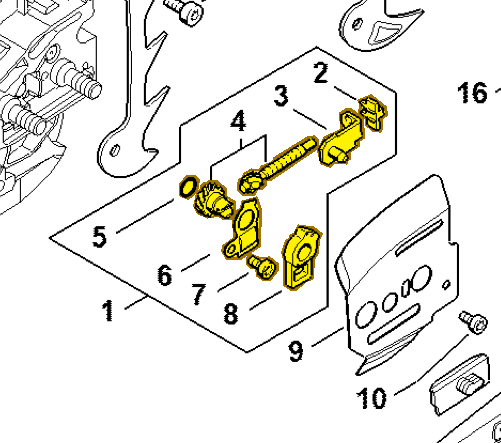
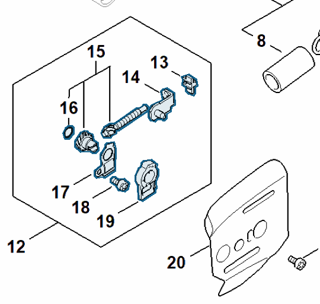

Chain tensioner kit
MA02 007 1002
MS 261 — chain tensioner
Includes items 2–8, including tensioner slide 1125 640 1900 (item 3).
Item 1 Qty listed: 1

MS 261 C-M spare-parts list, 10/02/2023. Drawing p. 15; parts table p. 16.
MS 462 — chain tensioner
Includes items 13–19, including tensioner slide 1125 640 1900 (item 14).
Item 12 Qty listed: 1

MS 462 C-M Z spare-parts list, 10/29/2024. Drawing p. 15; parts table p. 16.
Suggest a correctionGitHub · sign-in required